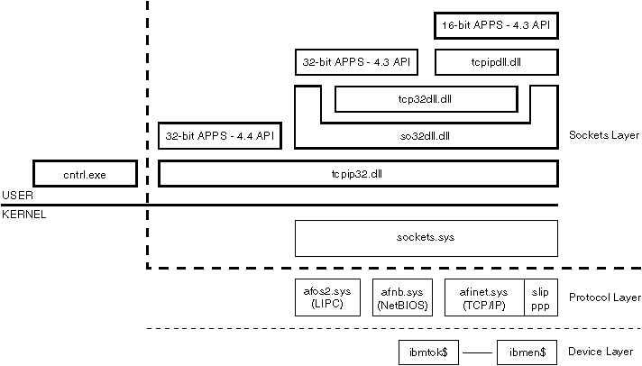

OS/2 Warp has integrated networking services that provide a 32-bit sockets API for the:
The OS/2 Warp operating system's networking services consists of three layers:
Processes communicate using the client/server model. In this model, a server process acting as one endpoint of a two-way communication path listens to a socket. At the other end a client process communicates to the server process through another socket. The client process can be on the same machine or on a different machine from the server process. The protocol stack(s) on the machine(s) maintains internal connections, and routes data between the client and server.
The following figure describes the OS/2 Warp kernel and internal structure
of TCP/IP Version 4.21 for OS/2 Warp.
Internal Structure of TCP/IP

The major components of the OS/2 TCP/IP stack are:
Control Program
CNTRL.EXE provides threads to run the TCP/IP stack. It provides a thread for each of the following:
CNTRL.EXE is normally started from CONFIG.SYS with a RUN = statement. It should be the first program to begin executing when TCP/IP is started.
Sockets Layer The sockets layer comprises the dynamic link libraries for the different categories of applications, and the device drivers.
TCPIP32.DLL exports the 32-bit BSD Version 4.4 sockets API to applications. TCP32DLL.DLL and SO32DLL.DLL together export the 32-bit BSD Version 4.3 socket APIs to applications. These three DLLs are thread-reentrant. TCPIPDLL.DLL provides the sockets APIs for 16-bit applications.
SOCKETS.SYS provides the common sockets layer for the protocol stacks. Calls made to the socket APIs first pass through SOCKETS.SYS, which routes the call to the correct protocol stack. The socket address families supported are AF_OS2 (or equivalently, AF_UNIX), AF_INET, and AF_NETBIOS (or equivalently, AF_NB).
Protocol Layer The protocol layer holds the device drivers.
AFOS2.SYS is the Local Interprocess Communication (LIPC) device driver. This driver supports AF_OS2 and AF_UNIX socket types. These socket types can be used by applications within one OS/2 machine to communicate with each other.
AFNB.SYS device driver provides support for sockets over NetBIOS. This driver supports applications written using the AF_NETBIOS or AF_NB socket type.
AFINET.SYS is the transport protocol device driver for the AF_INET socket type. AFINET.SYS is essentially TCP/IP code. It is compliant with NDIS version 2.0.1; any MAC driver written to that specification should work with the stack. SLIP, PPP, X25, and SNAlink use a special interface in this driver to their respective hardware.